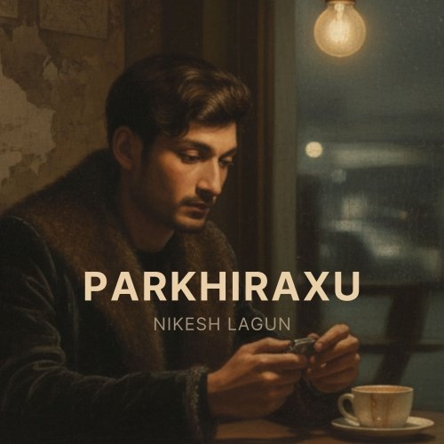
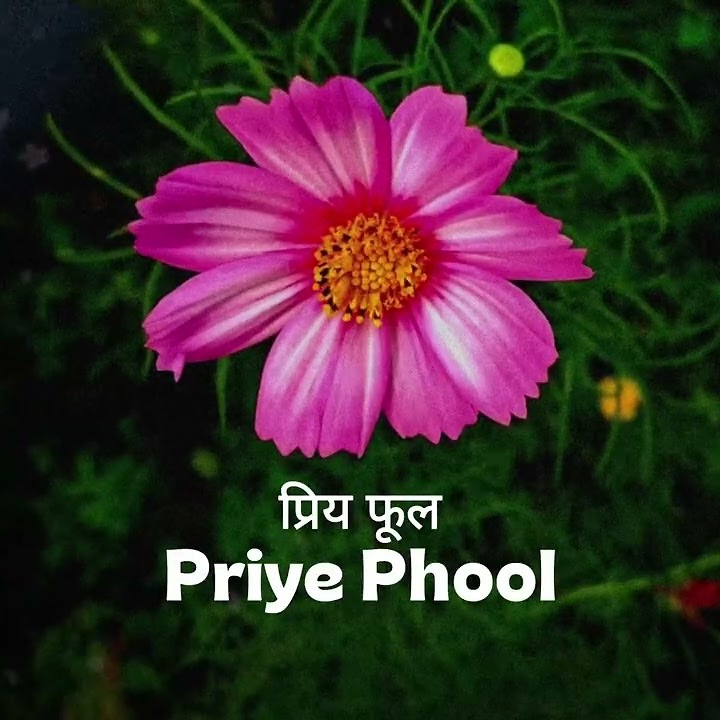
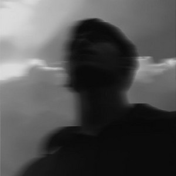
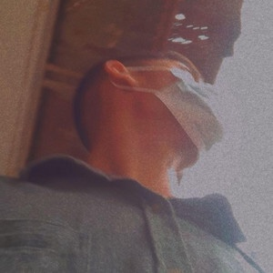

Creative pursuits in acoustic songwriting and performance
In addition to my theoretical work, I compose and perform original acoustic and pop music. Music has served as both a creative outlet and an experiential laboratory for understanding Drive, Flow, and performance dynamics.
Much of my theoretical work on Tension domain dynamics in CDA was informed by observing these variables in the context of extended musical practice and public performance.
Hover over a record to slide the CD out and hear a short preview. On a phone, tap the record.

My latest release. Official release on Spotify and YouTube, plus a sped-up version.

A soft song for a flower you love.

A gentle acoustic pop song about feelings, with a very simple arrangement.

For theorists of effort and Flow, music remains an invaluable test domain:
My continued engagement with music informs and is informed by the evolving CDA field. In this way, creative practice remains integrated with the broader inquiry into the structure of human effort.